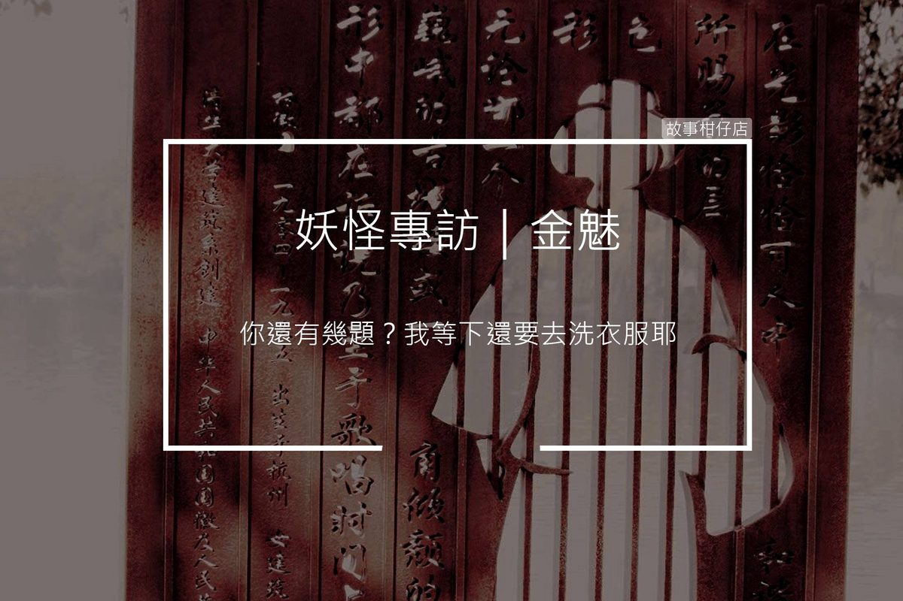

妖怪專訪/金魅

採訪人物：金魅
採訪人：剪溜
採訪時間：民國108年5月30日 夜
採訪地點：趙家儲藏室
故事回顧：
剪溜：請問你的名字是？
金魅：等我一下，我先把垃圾拿去倒。……嗯好，你剛問什麼？我的名字喔？我本名是吳阿花啦，進來趙家後，老爺夫人就嫌名字很俗，改叫我秋桂。
咦，這裡怎麼又髒了，等等嘿，我擦一下。…….問我名字幹嘛？都沒人在叫我們名字啦，都直接叫我們金魅啊。
剪溜：目前常活動的範圍在？
金魅：你腳抬起來，我拖一下地板。嗯好，可以放下來了。
不只我啦，所有金魅都差不多，幾乎都是在主人家，大廳、臥房、廁所、廚房，就這些地方轉來轉去，光打掃這些地方就很累了啦，是還要去哪裡？
這些人類很精明啦，把我們養在家裡打掃，可是又防我們跟防鬼一樣，不准我們進祠堂或靠近祖先牌位。
蛤？你說我們本來就是鬼？稍微有點常識啦，我們不是鬼，是妖怪，這兩個不一樣。
鬼是怎樣，你死了之後就變成鬼啊！金魅不一樣，我們很愛很愛乾淨，這個潔癖喔，讓我們只要一個晚上，就可以把全家打掃得乾乾淨淨，一根頭髮你都找不到。鬼只會嚇人啦、報仇啦，拿紙錢去買肉粽啦，哪有像我們這麼才情。
喔！拜託，不要吃餅乾，那個屑屑掉滿地，我剛拖好耶！
剪溜：你們的工會組織最常進行的抗議活動是？
金魅：你還有幾題？我等下還要去洗衣服耶。兩題？好啦好啦。
時機真的很差，兩百多年前，主人要求我們打掃，是要買一個活人來給我們吃耶，至少一個月吃得上一個人。現在咧？一年有一個人就不錯了。
講到這個我就氣，大家都差不多，我們吃的活人愈來愈少，工作量卻愈來愈多，所以我們要團結啊！要爭取權益，至少一年要吃得到十個人。不給人吃，我們就罷工！
上次有罷工過一次啦，兩個晚上就受不了了。是我們受不了啦！你知道兩個晚上累積的灰塵有多少嗎？垃圾兩天沒倒就有小黑蚊了耶！那些人類怎麼沒感覺啦！隔壁金魅還說，比起餓肚子，房子又髒又亂讓她更痛苦。大家都一樣，受不了髒，自己又開始拼命打掃起來。
現在我們醞釀新一波抗議計畫，要爭取周休五個小時，如果要幫忙顧小孩，待遇要另外算啦！
剪溜：現在早已沒有人獻活人給你們，你們如何生存？
金魅：你衣服下擺是沾到什麼？髒髒的一塊，要不要我先幫你洗一下？
好啦好啦，講正事。我問你，你最不喜歡吃什麼？……原來你不喜歡粽子喔。那如果你快餓死了，桌上只有粽子，你會不會吃？會嘛，對吧。
活人當然是最好吃的，我最喜歡吃童男童女，肉不多，但好有彈性，血都是甜的……你知道我已經將近八十年沒吃到童男童女了嗎？最近吃到的活人還是快死的病人，差太多了啦。
沒活人吃，日子還是要過啊。主人說，香蕉皮沾醬油吃起來很像人肉，又不殺生，真是功德一件。放屁！但能怎麼辦？肚子餓還是要吃，真的受不了，就偷偷去豬圈吃隻豬。
剪溜：你目前最喜歡的打掃工具是？
金魅：來，你看，那是主人前年買的掃地機器人，說是送我的年終禮物，讓我輕鬆一點。神經病！這玩意兒一下子卡住，一下子沒電，難用死了。重點是，它掃過的地方，我趴下去檢查手指一抹，明明還有一層灰。有那閒錢，為什麼不買個活人給我吃？
我告訴你，最好的打掃工具就是我們的雙手。什麼好神拖？根本拖不乾淨。
擦地也是講究技術的，最好就是拿塊布，跪在地上一寸一寸的擦，有棉絮、頭髮直接撿起來。用好神拖喔，只是把髒東西從門口拖到角落而已啦。
問完了是嗎？我要去洗衣服了。
欸，你這件衣服這麼髒，要不要脫下來我順便洗一洗？